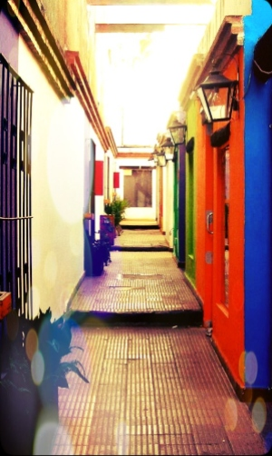

Algo de Historia...
La casa era un viejo inquilinato, que tenía 8 departamentos, algunos con una habitación y otros con dos. Los departamentos del primer y ultimo patio eran un poco más amplios puesto que contaban con dos habitaciones, y los del medio, tenían una sola y un baño, una cocina y un pequeño patio que estaba cerrado y tenía una sola puerta de acceso. La construcción más antigua la parte chorizo es de 1910 más o menos, y los agregados de los baños y detalles son un poco mas modernos.